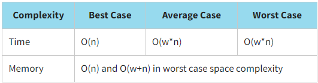
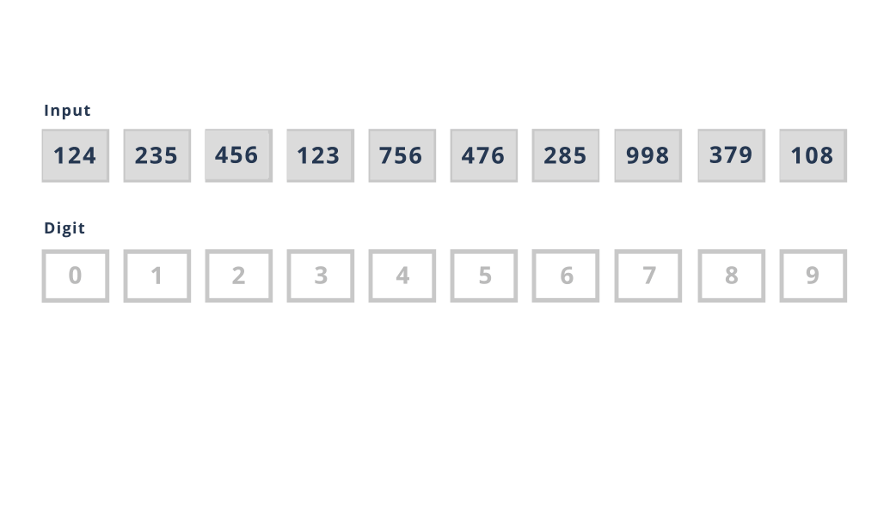

Radix Sorting
Radix sort is a non-comparative sorting algorithm. It avoids comparison by creating and distributing elements into buckets according to their radix. The array is iterated over for several times, and the elements are rearranged depending on which digit is in a certain bit. After processing the bits (all or almost all), the array is ordered, and the bits can be processed in opposite directions - from the least significant to the most significant, or vice versa.
There are 2 types of radix sort:
Least significant digit radix sorts (LSD radix sort)
In the least significant digit radix sorts (LSD radix sort), sorting is based on the least significant digit. We move from the least significant digits to the most significant ones, and at each iteration, we distribute the array elements depending on which digit is contained in the digit (first, all the digits ending with 0, then ending with 1, ..., ending with 9). After the next distribution, we return the elements to the main array in the order in which the elements got into the classes during the next reallocation. A new sequence emerges. Then they are grouped by the next bit from the end, then by the next, etc. until all the digits are enumerated, from the lowest to the highest.
Most significant digit radix sorts (MSD radix sort)
In the most significant digit radix sorts (MSD radix sort), sorting is based on the most significant digit. We move from high-order bits to low-order ones, and at each iteration we distribute the array elements depending on which digit is contained in the bit (equal to 0, equal to 1, equal to 2, ... equal to 9). Each subgroup is processed separately, while radix sort is recursively applied to the next bit. MSD is somewhat more complex to implement than LSD, but it is also more efficient. Also, MSD, unlike LSD, is a robust algorithm.
To perform the radix sort, we use a counting sort as a subroutine. A counting sort is an algorithm for sorting a collection of objects by keys (in our case, an array by indexes) that counts the number of elements that each distinct key value has. Its operation time linearly depends on the number of elements and the difference between the maximum and minimum values of the keys; therefore, this sorting method is used when all the elements to be sorted fall into a known, finite, and sufficiently small range. The initial setup and first pass of the data for counting sort are exactly the same as for the quicksort.
A counting sort is a stable sort. If, for example, we have a list of readers sorted by last name, then a counting sort is used to sort by the number of books read, and the final list will be sorted mainly by the number of books read; however, all readers who have read the same number of books will still be sorted by last name.
Let us sort our array of library cards using LSD radix sort. Recall that the values of library cards are {124,235,456,123,756,476,285,998,379,108}.
Look at the program implementation of LSD radix sort.
JavaScript realisation
function countingSort(arr, place) {
const output = new Array(arr.length).fill(0);
const count = new Array(10).fill(0);
for (let i = 0; i < arr.length; i++) {
count[Math.floor(arr[i] / place) % 10] += 1;
}
for (let i = 1; i <= 10; i++) {
count[i] += count[i - 1];
}
let i = arr.length - 1;
while (i >= 0) {
const index = Math.floor(arr[i] / place) % 10;
output[count[index] - 1] = arr[i];
count[index] -= 1;
i -= 1;
}
for (let i = 0; i < arr.length; i++) {
arr[i] = output[i];
}
}
function radixSort(arr) {
const max = Math.max(...arr);
let place = 1;
while (Math.floor(max / place) > 0) {
countingSort(arr, place);
place *= 10;
}
}
const initData = [124, 235, 456, 123, 756, 476, 285, 998, 379, 108];
console.log(`Initial array:`, initData);
radixSort(initData);
console.log(`Sorted array:`, initData);
The result:
Initial array: [ 124, 235, 456, 123, 756, 476, 285, 998, 379, 108 ]
Sorted array: [ 108, 123, 124, 235, 285, 379, 456, 476, 756, 998 ]
Click here to see a more detailed explanation of the radix and counting sorts.